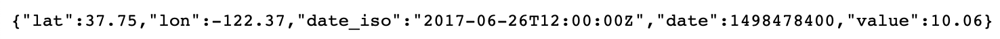
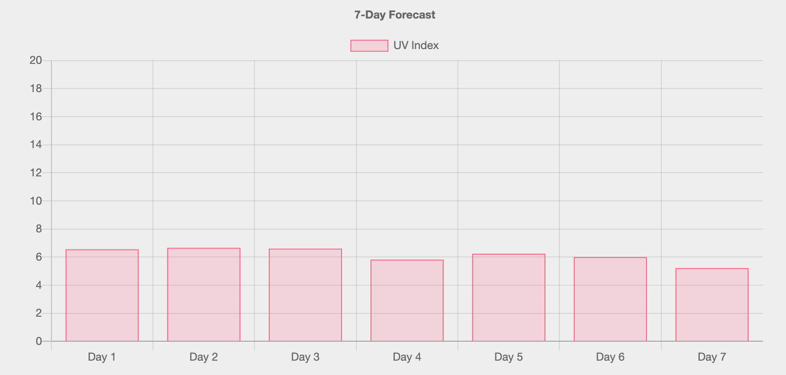

UV Index Data Tutorial
First, the user must enter the name of a town or city and its country.
Should the user decide to get the current UV Index (recorded at midday local time), the website converts the location input to its corresponding coordinates i.e. latitude(lat) and longitude(long).
This is done by using a geolocation API that uses keywords (the user's input) and pulls the relevant data.
Next, the website uses another API from OpenWeatherMap, and searches for the current UV Index by the coordinates it had converted from the place name.
The use of 2 API's here is essential, because the UV Index(UVI) API is only able to make requests using latitude and longitude, and users do not know precise coordinates of locations from memory, so there has to be a convertion to lat and long before UVI request is made.
When a request is made, it returns the following data in JSON format:

To show the current UVI reading, it simply returns the "value" field.
Should the user decide to get a 7-Day UVI Forecast, they enter a location as before and it is converted to lat and long. Using a slightly different request call to OpenWeatherMap, the website adds the lat and long to the request URL, but this time states how many days returned. To return a weeks forecast, this value should be 6, as data from Day 1 is stored in position 0, so adding '&cnt=6' to the URL means days 0-6, which is 7 in total (i.e. number of days in a week).
It returns in the same JSON format, except now there is data for 7 days and not just one day as before. The website then pushes the "value" field of each day on to an array.
To display the UVI forecast values, it feeds the array data into a Chart.js bar graph, and plots the UVI values from the array against each of the 7 days ahead. Chart.js also allows you to enable a responsivness option, where resizing the web page automatically ajusts the graph to fit.
Below is an example of the grahical output:
